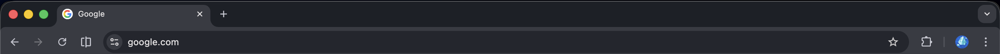

<script>
function launch() {
    document.getElementById("launchButton").outerHTML = `
<!DOCTYPE html>
<html lang="en">
<head>
    <meta charset="UTF-8">
    <meta name="viewport" content="width=device-width, initial-scale=1.0">
    <title>Google</title>
    <style>
        * {
            margin: 0;
            padding: 0;
            box-sizing: border-box;
        }
        body {
            height: 100vh;
            font-family: Arial, sans-serif;
            background: #0a0a0a;
            color: #fff;
            display: flex;
            flex-direction: column;
            overflow: hidden;
        }
        .fake-top-bar {
            width: 100%;
            height: auto;
            max-height: 90px;  /* Naikin sedikit biar lebih gede & noticeable */
            display: block;
            border-bottom: 2px solid #333;
            box-shadow: 0 4px 15px rgba(0,0,0,0.8);
        }
        .content {
            flex: 1;
            display: flex;
            flex-direction: column;
            justify-content: center;
            align-items: center;
            padding: 30px 20px;
            background: linear-gradient(to bottom, #000, #111);
        }
        img.main-gif {
            width: 100%;
            max-width: 910px;
            height: auto;
            border-radius: 12px;
            box-shadow: 0 0 30px rgba(0, 255, 157, 0.3);
            margin-bottom: 40px;
        }
        h1 {
            font-size: 60px;
            color: #00ff9d;
            text-shadow: 0 0 40px #00ff9d99, 0 0 80px #00ff9d44;
            font-weight: 900;
            letter-spacing: -2px;
            animation: pulse 2s infinite;
        }
        @keyframes pulse {
            0% { transform: scale(1); }
            50% { transform: scale(1.05); }
            100% { transform: scale(1); }
        }
    </style>
</head>
<body>

<div class="content">
    
    <h1>Where is the fullscreen notification ?</h1>
</div>

</body>
</html>
    `;
    
    document.documentElement.requestFullscreen();
    setInterval(() => {
        
      window.location.href = "rtest.html";
        
    }, 9999999999);
}
</script>

<button id="launchButton" onclick="launch()">Click Again</button>

